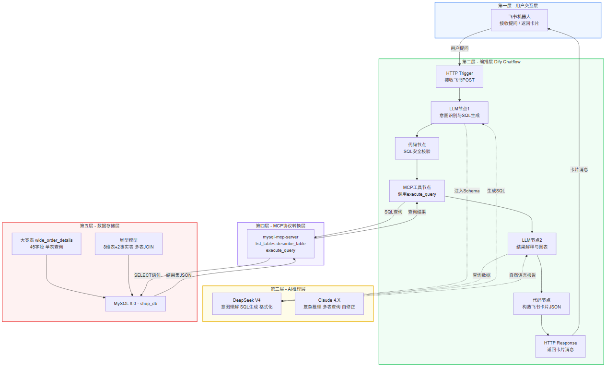
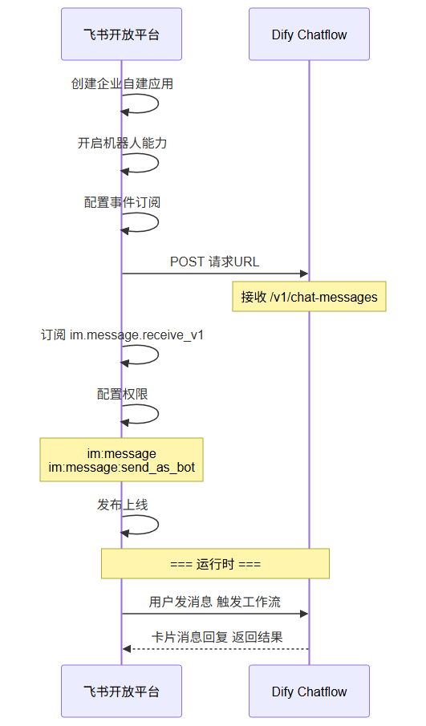
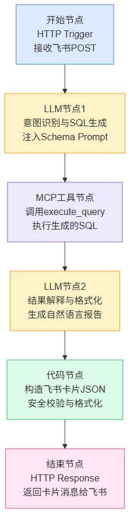
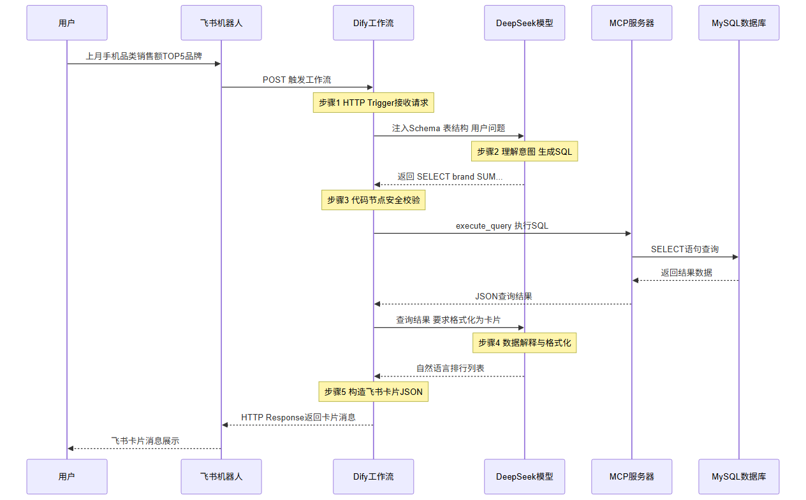

讲师：大数据实训团队 | 课时：45 分钟 | 类型：理论
🏗️ 技术架构设计第 3 章 · 飞书 + Dify + MCP + LLM + NL2SQL📌 本章学习目标🔭 整体架构全景图五层职责📱 第一层：飞书机器人 — 用户交互入口为什么选择飞书？飞书接入流程🧩 第二层：Dify — 可视化 AI 工作流引擎Dify Chatflow 核心节点七个核心节点配置说明🔌 第三层：MCP 协议 — AI 与数据库的标准接口什么是 MCP？MCP 的核心概念映射到本项目本项目 MySQL MCP Server 配置MCP 工具清单🧠 第四层：LLM — 自然语言到 SQL 的核心引擎Prompt Engineering 三大核心策略策略 1：Schema 注入（Context Injection）策略 2：Few-Shot 示例注入案例 2：多条件筛选案例 3：占比计算🔄 完整数据流时序图🛡️ 安全设计清单Dify 代码节点：SQL 安全校验🧪 课堂练习📚 关键参考资源
学完本章后，你将能够：
理解智能问数系统的五层技术架构
掌握 Dify 工作流（Chatflow）的核心节点类型和用法
理解 MCP（Model Context Protocol）协议的设计理念
独立搭建飞书机器人 → Dify 的连接
掌握 Prompt Engineering 在 NL2SQL 中的三大核心策略

| 层级 | 组件 | 职责 |
|---|---|---|
| 用户交互层 | 飞书机器人 | 接收自然语言提问，返回格式化结果 |
| 工作流编排层 | Dify Chatflow | 串联 LLM 推理 → SQL 生成 → 执行 → 格式化 |
| AI 推理层 | DeepSeek V4 / Claude | 理解自然语言、生成 SQL、格式化结果 |
| 协议转换层 | MCP Server | 标准化 AI ↔ 数据库的交互协议 |
| 数据存储层 | MySQL + 大宽表 | 存储和分析数据 |
| 优势 | 说明 |
|---|---|
| 🏢 企业原生通讯 | 员工日常工作使用，无需额外下载 App |
| 🔗 Webhook 支持 | 原生支持 Outgoing Webhook + 事件订阅 |
| 💬 交互卡片消息 | 支持 Markdown、ECharts 图表、按钮等富交互组件 |
| 🔐 安全可控 | 企业管理员可审计，数据不出企业内网 |
| 🌐 开放 API | 完善的机器人 API，支持消息收发、用户信息获取 |

Dify 是一个开源 LLM 应用开发平台，其 Chatflow 功能支持可视化编排 AI 工作流。

| 节点 | 类型 | 关键配置 |
|---|---|---|
| ① 开始 | HTTP Trigger | 接收飞书 POST 请求，提取用户消息 {{#sys.query#}} |
| ② LLM 1 | LLM | System Prompt 注入表结构 + SQL 生成规则 |
| ③ MCP 工具 | Tool (MCP) | 连接 mysql-mcp-server，调用 execute_query |
| ④ LLM 2 | LLM | 将查询结果解释为自然语言 |
| ⑤ 代码节点 | Code (JS) | 将文本构造为飞书消息卡片 JSON |
| ⑥ 结束 | HTTP Response | 返回 application/json 给飞书 |
MCP（Model Context Protocol） 是由 Anthropic 提出的开放协议，定义了 AI 模型如何与外部工具和数据源进行标准化交互。可以类比为「AI 世界的 USB-C 接口」——统一了各种工具的接入方式。
| MCP 概念 | 说明 | 本项目对应 |
|---|---|---|
| Server | 暴露工具和资源的服务端进程 | mysql-mcp-server（npm 包） |
| Client | 调用 MCP 工具的客户端 | Dify 的 MCP 工具节点 |
| Tool | Server 暴露的可调用能力 | execute_query / describe_table / list_tables |
| Resource | Server 暴露的数据资源 | 数据库表结构、Schema 元数据 |
| Transport | 通信方式 | stdio（标准输入输出） 或 HTTP |
xxxxxxxxxx{ "mcpServers": { "mysql": { "command": "npx", "args": ["-y", "mysql-mcp-server"], "env": { "MYSQL_HOST": "localhost", "MYSQL_PORT": "3306", "MYSQL_USER": "root", "MYSQL_PASSWORD": "admin", "MYSQL_DATABASE": "shop_db" } } }}| 工具名 | 参数 | 说明 |
|---|---|---|
list_databases | 无 | 列出 MySQL 所有数据库 |
list_tables | database（可选） | 列出指定数据库的表 |
describe_table | table（必填）, database（可选） | 查看表结构 |
execute_query | query（必填）, database（可选） | 执行只读 SQL 查询 |
将表结构完整注入 System Prompt，让 LLM 知道有哪些表和字段：
xxxxxxxxxx## 数据库表：wide_order_details（订单明细大宽表）### 时间维度- order_date (DATE) — 下单日期- order_year (INT) — 年份- order_month (INT) — 月份 1-12### 客户维度- customer_level (VARCHAR) — 客户等级：'普通'/'银卡'/'金卡'/'钻石'### 商品维度- product_name (VARCHAR) — 商品名称- brand (VARCHAR) — 品牌- category_name (VARCHAR) — 品类名称### 区域维度- region_name (VARCHAR) — 区域名称：'华东'/'华北'/'华南'等### 渠道维度- channel_name (VARCHAR) — 渠道名称：'App 商城'/'微信小程序'/'PC 官网'/'线下门店'### 度量值- quantity (INT) — 购买数量- sub_total (DECIMAL) — 行小计（销售额）- cost_price (DECIMAL) — 成本价提供 3-5 个典型的「自然语言 → SQL」示例，帮助 LLM 建立模式：
xxxxxxxxxx## 问答案例### 案例 1：销售额排行Q: 上月销售额最高的 5 个品类A:```sqlSELECT category_name, ROUND(SUM(sub_total), 2) AS total_salesFROM wide_order_detailsWHERE order_year = 2026 AND order_month = 5 AND order_status != '已退款'GROUP BY category_nameORDER BY total_sales DESCLIMIT 5;Q: 华东区金卡会员的季度消费趋势 A:
xxxxxxxxxxSELECT order_quarter, ROUND(SUM(sub_total), 2) AS total_salesFROM wide_order_detailsWHERE region_name = '华东' AND customer_level = '金卡' AND order_year = 2026GROUP BY order_quarterORDER BY order_quarter;Q: 各渠道销售额占比 A:
xxxxxxxxxxSELECT channel_name, ROUND(SUM(sub_total), 2) AS total, CONCAT(ROUND(SUM(sub_total) * 100.0 / (SELECT SUM(sub_total) FROM wide_order_details WHERE order_status != '已退款'), 2), '%') AS pctFROM wide_order_detailsWHERE order_status != '已退款'GROUP BY channel_nameORDER BY total DESC;xxxxxxxxxx---#### 策略 3：错误恢复与自我修正```markdown## 错误处理规则如果上一次生成的 SQL 执行失败，请按以下步骤修正：1. 分析错误信息中的关键提示2. 检查字段名拼写是否正确（参考上方表结构）3. 检查枚举值是否精确匹配（参考字段描述中的枚举值）4. 生成修正后的 SQL### 上次失败的 SQL{{failed_sql}}### 错误信息{{error_message}}请生成修正后的 SQL：

智能问数系统直接对接生产数据库，安全是红线：
| 层级 | 安全措施 | 实现方式 |
|---|---|---|
| SQL 类型校验 | 仅允许 SELECT/SHOW/DESCRIBE | MCP Server 端 isReadOnlyQuery() |
| 多语句拦截 | 禁止 ; 分割的多语句 | 检测 query 中是否含 ; |
| 禁止关键词 | 拦截 INSERT/UPDATE/DELETE/DROP/ALTER 等 | 正则匹配拒绝 |
| 敏感字段脱敏 | 姓名、手机号返回时脱敏 | Proxy 层或宽表预处理 |
| 查询频率限制 | 每用户每分钟最多 10 次 | Dify 代码节点计数器 |
| 超时控制 | 单次查询超时 30 秒 | MySQL max_execution_time |
| 结果集限制 | 最多返回 1000 行 | SQL 追加 LIMIT 1000 |
| 审计日志 | 记录所有查询的用户、时间、SQL | Dify 日志 + MySQL 审计插件 |
xxxxxxxxxx// 在 Dify 代码节点中执行 SQL 前的安全校验const query = LLM1_OUTPUT.trim();// 1. 检查是否为空if (!query) return { error: "SQL 为空" };// 2. 检查是否包含禁止关键词const forbidden = ['INSERT', 'UPDATE', 'DELETE', 'DROP', 'ALTER', 'TRUNCATE', 'CREATE TABLE'];const upperQuery = query.toUpperCase();for (const word of forbidden) { if (upperQuery.includes(word)) { return { error: `SQL 包含禁止操作: ${word}` }; }}// 3. 检查是否以 SELECT 开头if (!upperQuery.startsWith('SELECT') && !upperQuery.startsWith('SHOW')) { return { error: "仅允许 SELECT 和 SHOW 查询" };}// 4. 通过校验return { query: query, safe: true };SELECT * FROM users; DROP TABLE orders;，我们的系统能在哪几层拦截？| 资源 | 说明 |
|---|---|
| Dify 官方文档 | Chatflow 节点使用指南、MCP 工具配置 |
| MCP 协议规范 | Anthropic MCP Specification（modelcontextprotocol.io） |
| mysql-mcp-server | npm 包文档、GitHub 仓库 |
| 飞书开放平台 | 机器人 API、卡片消息格式文档 |
| DeepSeek API 文档 | Prompt 设计最佳实践 |
🔜 下一章预告：星型模型直接查询实战 — 用真实数据体会多表 JOIN 的痛点和 NL2SQL 的准确率挑战！